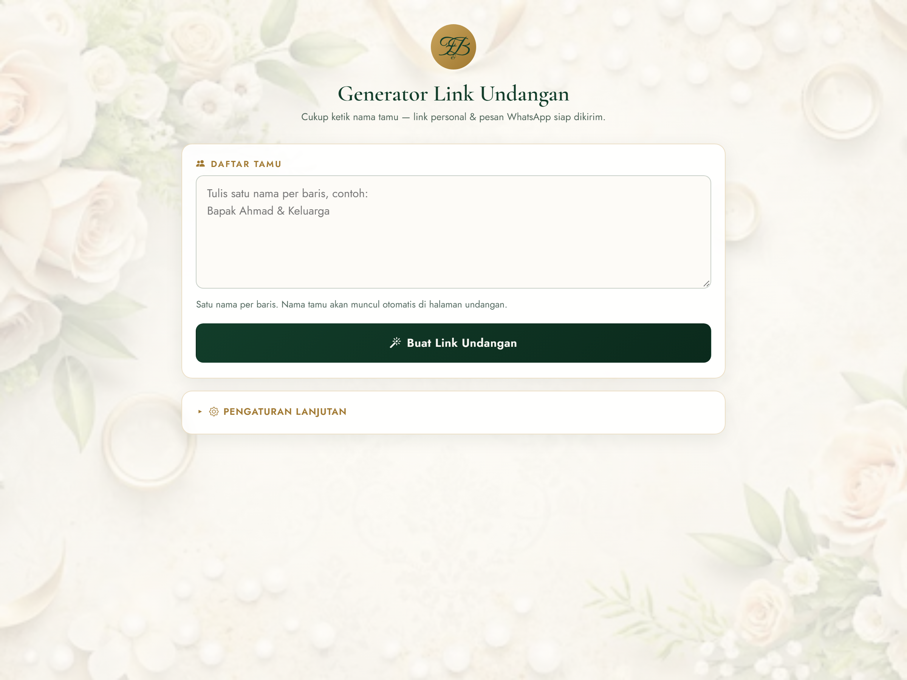
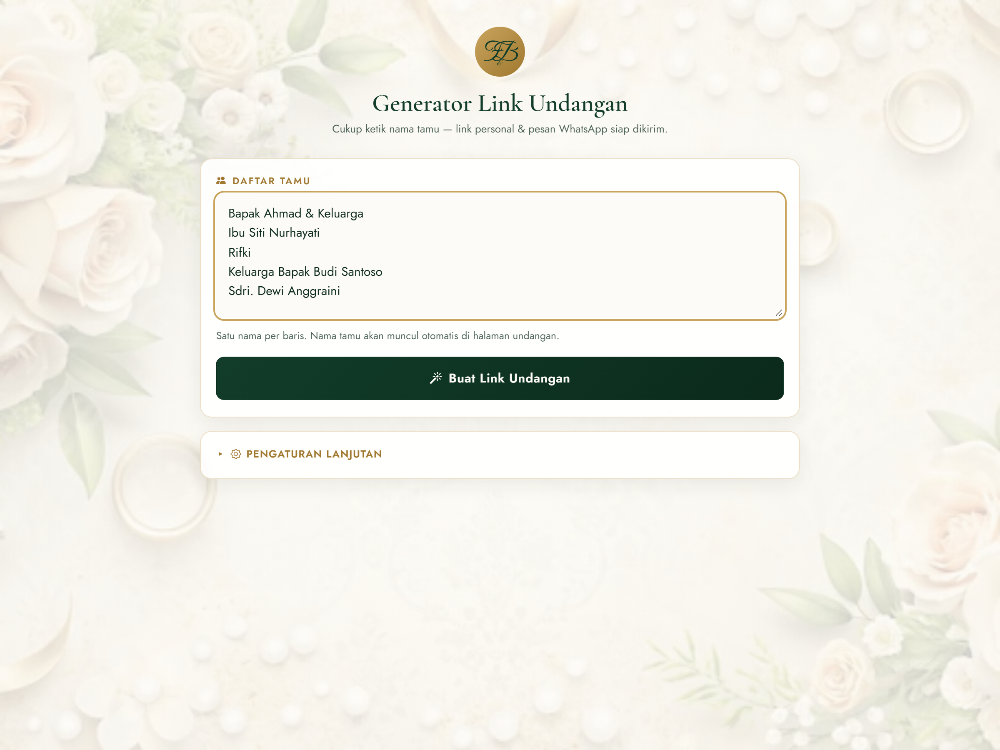
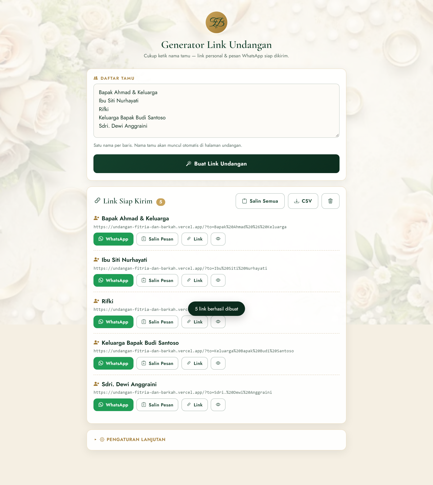
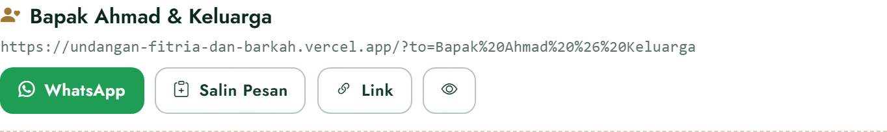
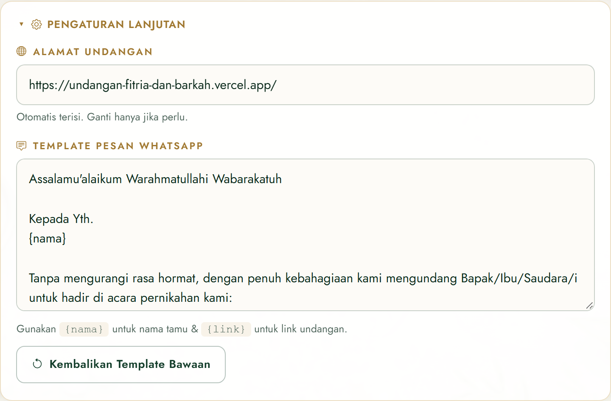
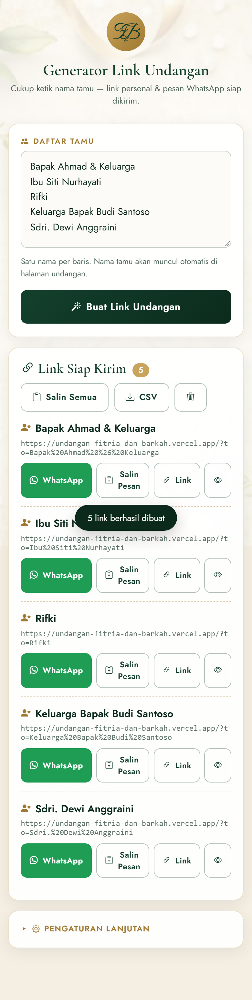

F&B
Manual Book
Generator Link Undangan
Fitria & Barkah
Panduan praktis membuat & membagikan link undangan digital personal untuk setiap tamu.
Daftar Isi
- 1. Pengenalanhal. 3
- 2. Cara Mengakseshal. 4
- 3. Panduan Langkah demi Langkahhal. 5
- 4. Fitur Tombolhal. 7
- 5. Pengaturan Lanjutanhal. 8
- 6. Tampilan Mobilehal. 9
- 7. Tips & Troubleshootinghal. 10
BAB 1
Pengenalan
Generator Link Undangan adalah alat bantu untuk membuat link undangan
digital yang personal per tamu. Cukup ketik nama tamu, sistem akan
otomatis menghasilkan link unik & pesan WhatsApp siap kirim.
Kelebihan
- Nama tamu otomatis muncul di halaman pembuka undangan.
- Tidak perlu input nomor WhatsApp — cukup nama.
- Satu tombol untuk kirim via WhatsApp / Bagikan ke aplikasi lain.
- Data tersimpan otomatis di browser (tidak hilang saat tab ditutup).
- Bisa ekspor ke CSV untuk arsip data tamu.
Konsep utama: tidak lagi mencari nomor kontak dulu. Cukup ketik nama →
klik tombol WhatsApp → pilih kontak → kirim. Selesai.
BAB 2
Cara Mengakses
Buka salah satu alamat berikut di browser (Chrome, Safari, Edge, dsb.):
https://undangan-fitria-dan-barkah.vercel.app/generator- atau
.../generator.html
Halaman ini tidak terindeks Google & tidak ada link ke sini dari
halaman utama undangan. Bagikan URL-nya hanya untuk pemakaian internal.
Tampilan awal

Gambar 2.1 — Tampilan halaman generator saat pertama kali dibuka
BAB 3
Panduan Langkah demi Langkah
-
Ketik nama tamu pada kolom Daftar Tamu.
Aturannya: satu nama per baris. Nama boleh panjang, boleh mengandung
gelar (Bapak, Ibu, H., Sdri., dll.).
-
Contoh isian:
Bapak Ahmad & Keluarga
Ibu Siti Nurhayati
Rifki
Keluarga Bapak Budi Santoso
Sdri. Dewi Anggraini
-
Klik tombol “Buat Link Undangan” berwarna hijau tua.
-
Sistem akan menampilkan daftar link — satu kartu per tamu —
di bagian bawah.
-
Pada setiap kartu, gunakan tombol WhatsApp atau Bagikan
untuk mengirim undangan.

Gambar 3.1 — Contoh form yang sudah diisi daftar tamu
Gambar 3.2 — Tombol untuk membuat link

Gambar 3.3 — Daftar link yang siap dikirim
BAB 4
Fitur Tombol
Pada setiap kartu tamu

Gambar 4.1 — Kartu link per tamu & tombol-tombolnya
| Tombol | Fungsi |
|---|
| WhatsApp (hijau) |
Membuka WhatsApp Web/App dengan pesan siap kirim. User memilih kontak tujuan. |
| Bagikan (emas) |
Muncul di HP modern — buka native share sheet (WA, Telegram, Email, dsb.). |
| Salin Pesan |
Menyalin teks pesan lengkap (nama + isi undangan + link) ke clipboard. |
| Link |
Menyalin hanya URL undangan personal tamu tersebut. |
| (ikon mata) |
Preview undangan versi tamu tersebut di tab baru. |
Toolbar global (di kanan atas hasil)
Gambar 4.2 — Toolbar global
- Salin Semua — copy semua nama & link sekaligus (untuk arsip).
- CSV — unduh file
link-undangan-fitria-barkah.csv untuk dibuka di Excel.
- Ikon tempat sampah — kosongkan daftar tamu (ada konfirmasi).
BAB 5
Pengaturan Lanjutan
Bagian ini tersembunyi secara default. Klik pada baris “Pengaturan Lanjutan”
untuk membukanya.

Gambar 5.1 — Kartu pengaturan lanjutan setelah dibuka
1. Alamat Undangan
Base URL yang akan digunakan untuk menyusun link. Nilai default:
https://undangan-fitria-dan-barkah.vercel.app/. Ganti hanya jika alamat
undangan berubah (contoh: pindah domain kustom).
2. Template Pesan WhatsApp
Teks yang akan dikirim ke tamu. Gunakan variabel berikut:
{nama} — otomatis diganti nama tamu.{link} — otomatis diganti link personal tamu.
Tombol “Kembalikan Template Bawaan” untuk mengembalikan template ke
versi default jika terlanjur berantakan.
Catatan: perubahan template & alamat akan tersimpan otomatis di
browser. Jika membuka dari komputer/browser lain, isian ini kembali ke default.
BAB 6
Tampilan Mobile
Generator sudah dioptimalkan untuk digunakan langsung dari HP. Layout otomatis menyesuaikan
layar sempit — tombol menjadi lebih besar & menempati satu baris penuh untuk mudah ditekan.

Gambar 6.1 — Tampilan pada layar HP
Tips: pakai HP untuk workflow tercepat — tinggal tap tombol
Bagikan lalu pilih kontak WhatsApp dari daftar. Tidak perlu buka WA
manual sama sekali.
BAB 7
Tips & Troubleshooting
Tips penggunaan efektif
- Siapkan daftar nama tamu dulu di Notes/Excel, lalu copy-paste ke kolom Daftar Tamu.
- Nama duplikat otomatis dihilangkan — tidak akan ada link ganda.
- Kirim secara bertahap (batch), misal 10-20 orang per sesi agar tidak keteteran.
- Simpan hasil CSV sebagai backup data siapa saja yang sudah diundang.
Masalah umum
| Masalah | Solusi |
|---|
| Tombol Bagikan tidak muncul |
Fitur ini hanya tersedia di HP modern (Android/iOS). Di desktop gunakan tombol WhatsApp / Salin Pesan. |
| Nama tamu tidak muncul di undangan |
Pastikan link yang dikirim mengandung ?to=Nama+Tamu. Jangan modifikasi manual. |
| Data hilang setelah tutup browser |
Data disimpan di localStorage. Jika hilang, kemungkinan cache/history browser dibersihkan. |
| Klik WhatsApp tidak buka aplikasi |
Di komputer, WhatsApp Web akan terbuka di tab baru. Pastikan sudah login. |
Butuh bantuan? Hubungi developer / admin website Anda. Manual ini
dibuat untuk pemakaian sederhana — tidak diperlukan skill teknis khusus.